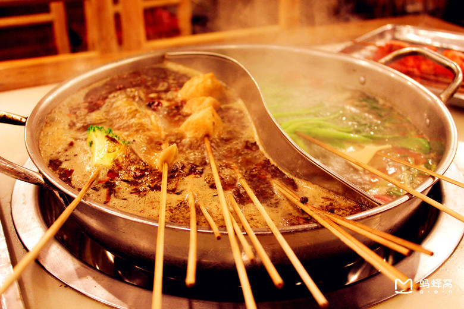

美食

担担面是着名的小吃。用面粉擀制成面条，煮熟，舀上炒制的猪肉末而成。成菜面条细薄，卤汁酥香，咸鲜微辣，香气扑鼻，十分入味。此菜在广为流传，常作为筵席点心。 因最早是由小贩挑着担子沿街叫卖而得名。其配料有红酱油、化猪油、麻油、芝麻酱、蒜泥、葱花、红油辣椒、花椒面、醋、芽莱、味精等十多种。特点是面细无汤，麻辣味鲜。

相传钟水饺创制于1893年，由名叫钟燮森的小贩经营，后设店于荔枝巷。因为其调味重红油，故又称为“荔枝巷红油水饺”。钟水饺绝在选料，妙在调味。红油是选用“二筋条”红辣椒面，用菜油炼制而成；酱油采用特制的复制酱油，再加以蒜泥汁水、芝麻油等多种调料，巧配妙合而成。香味浓郁的调料，红亮色泽，与饱满馅心的清鲜味相配搭，形成多滋多味的风格。钟水饺1990年获

走在的大街小巷，我们随处可见大大小小的串串香铺子，红漆的矮方桌、小凳子和热气腾腾的一锅红汤以及那一大把一大把的竹签就构成了特别的一景。